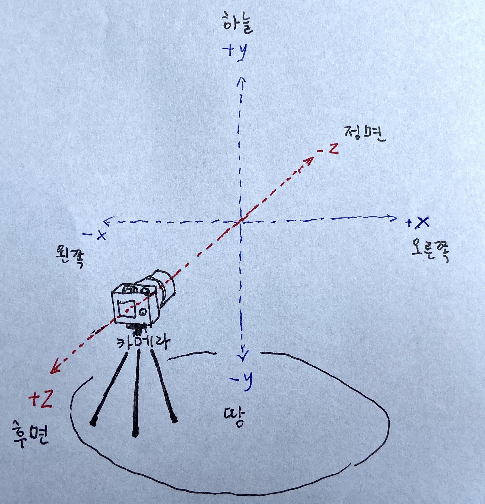
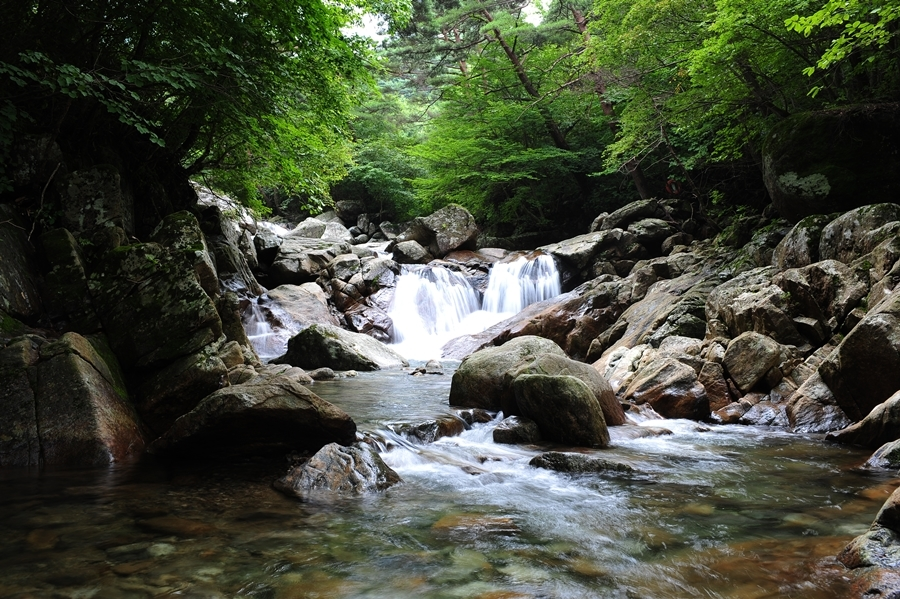
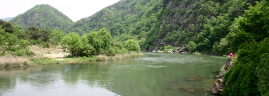
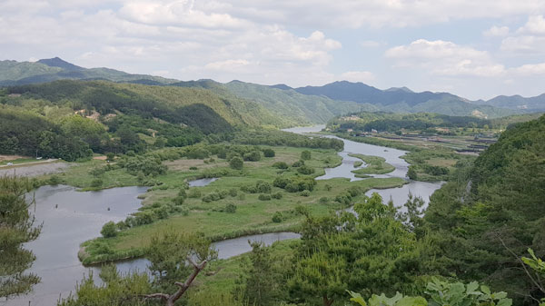

메타정보
-
개요
- random-entity가 2021년에 만들고자 하는 단편영화입니다.
- 일정 내에 완성된다면 2021년 12월 디자인과 졸업전시 작품으로 전시될 것입니다.
- 시간이 부족하면 [강가에서 I] 파트만 완성해서 전시할 것입니다. 나머지는 그 뒤에 완성해도 됩니다.
- 일손이 부족하여 스태프(연기, 스토리보드, 미술, 촬영, 녹음, CG/VFX, ...)를 상시 모집합니다. 이 글을 보시는 분이 별로 없겠지만 지원은 오픈카톡으로 해주시면 감사하겠습니다.
-
스태프 간 파일 공유 및 회의
- 구글 드라이브 : 파일/폴더, 스프레드시트 공유
- 슬랙 : 스태프 간 소통
- Zoom : 급할 때 화상 회의
- gather.town : 한가할 때 화상 회의
- 오픈카톡 : 신규 스태프 지원
- GH Pages (여기) : 일반에게 공개된 웹문서
-
제목
-
후보
- 종교화#6
- 영화#1
- 노스탈지아
- 있다
- 이X다 ('X'는 '이'의 받침)
- 있다, 잇다, 잊다
- 있다 (타이포 스타일라이징만 X 받침으로) [유력]
-
화면 규칙
카메라의 시선 방향을 -z 방향, 화면 상 오른쪽을 +x 방향, 화면 상 위쪽을 +y 방향이라고 할 때,
-

- z축이 시간축.
- xy평면은 동일시간대.
- z축 상의 움직임은 시간을 초월한 움직임.
- 카메라에 가까워지는 인물 = [과거 => 미래] 이동
- 카메라에서 멀어지는 인물 = [미래 => 과거] 이동
- xy평면 상의 움직임은 같은 시간대 속에서의 움직임.
- z방향의 움직임의 ('무언가 이쪽으로 건너온다'라는 느낌의) 신비로움(?)을 강조,
- x방향 움직임의 (같은 시간을 걷는 인물들의) 친근함을 강조한다는 마음으로 촬영.
- 줌인은 현재에 발 딛은 채로 과거를 자세히 들여다본다는 느낌.
-
?: 이 규칙을 언제까지 지키고 언제 해제할 것인가 (기표-기의 대응 해체 시의 카오틱 느낌 유발)
- (내용, 스토리보드 참조 (건너뛰어도 됨))
- 지킴으로써 어떤 말을 하는 경우
- 요괴가 영상을 짊어지고 되돌아간 후 카메라가 180도 회전할 때,
- 웜홀을 건널 때(비스듬한 앵글),
- 단양 구석기 굴에서 인물들이 나온 후 도시 쪽으로 카메라가 회전할 때(?),
- 깸으로써 어떤 말을 하는 경우
- 요괴가 강을 건너와 고사상 파티에 참가할 때 (아이폰 카메라로 전환),
- 지킴으로써 어떤 말을 하는 경우
영상적 장치 (후보)
- 화면이라고 믿었던 것이 거울상이었고, 거울이 깨지니 배후가 보인다. (참조: random-entity "나선닮음 거울 연속 깨기 애니메이션 습작"(현재 비공개))
- 전체화면이었다가 전체화면의 부분이 되어 화면 속으로 들어가는 화면 (참조: random-entity "시간#2")
- 영상을 짊어지고 가다.
- 영상을 짊어지고 올라가는 영상을 짊어지고 올라가는 영상을 짊어지고 올라가는 영상을... (약한 참조: 데이빗 린치 감독 "인랜드 엠파이어" 2:47:35 ; random-entity "자화상#2")
- 화면 속 영정사진 프레임 안에 전체 화면과 같은 화면 투입.
- 화면F 속의 화면(축소)F 속의 화면(축소축소)F 속의... (약한 참조: random-entity "종교화#1")
- 영상을 짊어지고 가다.
- 카메라가 다른 데를 바라보다 돌아오니 인물 변경.
- 다리와 굴과 웜홀
- 다리를 다리하다(다리 = 두 지점을 이어주는 통로)
- 옆에서 보면 다리, 앞에서 보면 굴.
(x축 방향으로 길게 뻗은 다리 = 일반 다리 = 같은 시간 속 인물들의 이동;
vs
z축 방향으로 깊이 뻗은 다리 = 굴 = 시간을 초월한 이동) - 계곡 다리에서 한강 다리로 크로스페이드.
- 원근법 무시, 크기를 알 수 없는 요괴 z 방향으로 뻗은 다리 (굴) 이동.
- 옆에서 보면 다리, 앞에서 보면 굴.
- 굴 A의 입구로 들어가 굴 B의 출구로 나오다. (약한 참조: 폴 토마스 앤더슨 감독 Radiohead "Daydreaming" MV
- 영상 자체에 파인 웜홀 (참조: random-entity "잃어버린 것"(현재 비공개))
- 영상 안의 우주에서는 갈 수 없는 경로
- (로케) 단양 구석기 굴
- 다리를 다리하다(다리 = 두 지점을 이어주는 통로)
- 오블리크 앵글로 공사판 옆 걸으며 촬영 => 화면 상에서 언덕처럼 보임.
- 모핑
- 구 => 토러스 (지구)
- 새 => 물고기
- 수많은 (웜홀 뚫린) 영상의 그리드 축소 => 노이즈 평면 => (회색 평면 =>) 회색 구 => 처음에 나왔던 중력원 구
- 산이 말하다.
- 선사시대 타이포(?)
- 현실적 초현실 사운드
- 스펙트로그램 구간별 선형 왜곡 (참조: random-entity "Real-unreal continuum")
- 특정 주파수대역만 리버스
- 푸앵카레의 추측
- 익스플레이너 비디오?
- 하늘 도르래 ("죽고 싶어도 죽을 수가 없어")
- 건물 파괴
- 피부의 흉터를 핥았더니 흉터가 사라졌다. (약한 참조: 아피찻퐁 위라세타쿤 감독 "찬란함의 무덤", 레오스 카락스 감독 "홀리 모터스")
내용 (TBE)
-
등장인물
- 강가에서 고사 지내고 피크닉 하는 남자 2명 여자 2명
- A = 남1
현재 자연+먹방 유튜버아름다운 풍경의 자연을 찾아가 자연의 신에게 고사를 지내고 고사상 차림을 맛있게 먹는 콘텐츠 제작.
- 그냥 말 없는 걸로 결정.
- B = 남2
- 바위를 아주 강하게 던지는 사람
- 요괴(X)의 과거의 미래에 해당하는 사람 (동일 배우)
- C = 여1
- B와의 과거를 망각하고 있는 사람
- D = 여2
- 별 행동 안 함
- A = 남1
-
인간(B)이었다가 마음이 죽어서 요괴가 된 X
- 과거-B => 현재-B & 요괴-X (평행우주 분기점에서 분화되어 나온 두 미래)
- 과거: 과거-B만 있었음.
- 분기점: 현재-B & 요괴-X 두 가지 미래 생성
- 현재: 현재-B & 요괴-X가 공존(?)
- 이미지

-
신비한 새 [폐기] (회색 구로 대체.)- CG? 분장? 길리슈트 사막형(다른 요괴)로 대체? (미정, 기술검증 결과에 따라 변경)
- 강가에서 고사 지내고 피크닉 하는 남자 2명 여자 2명
-
문장 요약 각본
-
메인 파트 세 줄 요약 시놉시스
- 죄인에게 던진 돌이
- 지구 한바퀴를 돌아서 던진 사람에게 돌아왔으나
- 맞은 것은 거울이었고 죄인은 그 뒤에 애초부터 죽어있었다.
-
파트 별 상세 문장 요약 각본
-
[한강대교] 다리에서 I
- ...
-
[밤의 산길] 인트로
자연신 고사상 유튜버A는 집에서 유튜브를 보다가 우연히 푸앵카레의 추측 익스플레이너 비디오를 보게 된다.(화가 난 듯 타자기를 막 두드리고 검색했더니 나왔다.)- A는 다음날 촬영을 위해 B(조수석)와 함께 밤에 산길을 운전하면서 갓길을 절뚝이며 걸어가는 사람을 반복해서 목격한다.
- 마지막 반복 때 그 사람은 절을 하고 있다.
- 조수석에 있던 B는 사라져 있지만 A는 인지하지 못한다.
-
[영월] 강가에서 I
-
고요한 자연 속 감정적 긴장
- (인서트) 사람 형상 나무들
- ABCD가 강가에 고사상을 차리고 유튜브 촬영을 시작한다.
- B가 어디 좀 다녀오겠다고 하며 촬영 중이던 카메라를 놔두고 떠난다.(여기부터 사운드 분위기 변화: 자연 앰비언트 사운드 많아짐, ...)
- ACD가 강가에 돗자리를 펴고 앉아 발장구를 치며 하하호호 즐거운 휴식 시간을 보낸다.
- (인서트) (7초 정도 등간격) 자연 조경샷들
- (등간격 이어서) X가 강 건너 산속으로부터 물을 마시러 건너편 강가로 내려온다.
- X는 물 중간에 있는 신비한 새를 발견하여 그쪽으로 다가간다.
- 그러다가 ACD 무리와 마주친다.
- ACD는 X에게 돌을 던진다.
- (화면에만 갑자기 나타난)B가 큰 바위를 들고 아주 강하게 던진다.(180도 법칙 깸)
- 다른 돌들에 맞아 휘청거리던 X를 바위는 빗겨간다.
-
(인서트) 빌딩 붕괴
- 큰 돌은 지구를 한바퀴 돌며 세계 곳곳의 건물들을 부수며 나아간다.(실제 오래된 건물 폭파시키는 파운드 푸티지에다가
날아가는 운석 같은 이미지 합성)
- 특별히 예루살렘의 종교적 건축물들은 그 자체를 부수지 않고 그 건축물들이 나오고 있는 영상 프레임(혹은 그 영상에 텍스쳐로서 입혀진 3d 직육면체를)을 부수고 지나간다.
- 큰 돌은 지구를 한바퀴 돌며 세계 곳곳의 건물들을 부수며 나아간다.(실제 오래된 건물 폭파시키는 파운드 푸티지에다가
날아가는 운석 같은 이미지 합성)
-
인지적 충격
- 지구 한바퀴를 돌아온 바위는 B의 뒷통수를 향해 날아온다.
- ACD는 바위를 보고 겁에 질린다.
- 그러나 바위가 향하던 것은 거울에 비친 B의 반사상이었다.
- 바위는 거울에 날아든다. 거울이 깨진다.
- 깨진 거울 뒤에는 강가가 보인다.
- (5초 정적)
- 이 모든 상황 전에 이미 죽어 있던 인간-X의 시체가 강물을 떠내려와 화면 오른쪽 모서리를 지나 화면 안으로 들어온다.
- 강의 흐름을 따라 이동하다가 수면 위로 돌출된 바위에 걸린다.(바위가 없으면 돌탑을 쌓아 대체)
- (인서트) 클로즈업 된 낚시줄 감는 손이 보이고 소리가 들린다.
- (인서트) 푸앵카레의 추측 익스플레이너 비디오에서 구 위의 루프가 점으로 축소되어 가는 애니메이션
- 시체는 다시 화면 오른쪽 모서리 밖으로 나간다.
- 시체가 화면 오른쪽 모서리 밖으로 나감과 동시에 화면 왼쪽 모서리 안으로 들어온다.
- 카메라가 강물 안으로 접근하면서 (ACD의 어깨를 넘어, '어디 나도 한 번 가까이서 보자'하는 느낌의 카메라 이동) 시체가 클로즈업 된다.
- 지금까지의 영상이 영상 속 직사각형 프레임으로 축소되면서 X는 그 프레임을 등에 지고 건너편 산으로 되돌아 올라간다.
- 강 건너편 방향을 향하던 카메라는 반시계 방향으로 돌면서 ABCD가 있던 쪽을 향하려고 한다.
- 카메라가 다 돌기 전, 90도 정도 돌았을 때 카메라의 회전이 멈추고 멀리에 실제로는 없는 다리(강을 건너는)가 허깨비처럼
페이드 인 되어 나타난다.
- (이 사라진 혹은 나타난 허깨비 다리는 나중에 웜홀의 형태로 재발견 혹은 미발견 될 것이다.)
- 강가의 허깨비 다리에서 한강대교 씬으로 화면이 크로스페이드 된다.
-
-
[한강대교, 노들섬, 도림천] 다리에서
- B와 C는 한강대교를 걷는다. (측면에서 따라가는 카메라)
- 다리 중앙에 도달하자 ......
- B는 노들섬으로 뛰어 간다.
-
[영월] 강가에서 II (과거)
- [강가에서 I] 파트 마지막에 돌다가 멈추었던 카메라가 마저 다 돌고 ABCD가 있는 자갈밭을 비춘다.
- young ABCD는 강가에 놀러왔다. (3~5년 전, 복장 변화로 암시)
- young ABCD는 강가에 차려진 고사상을 보고 호기심을 갖는다.
- 강 건너편의 강가에서 X가 낚시를 하고 있다.
- X는 시체를 건져 올린다.
- 양동이에 물고기가 담긴다.
- X는 young ABCD가 있는 쪽으로 강을 건너 온다.
- X는 양동이에 담긴 많은 물고기를 먹어도 된다고 하며 건내주고 웬 고사상을 이렇게 차려놓았냐고 묻는다.
- X는 사진 액자를 등 뒤에서 꺼내 고사상 위에 세운다.
- 사진 액자 안에는 전체 영상과 동일한 영상이 들어가 재생되고 있다.
- C는 X에게 물고기는 어떻게 먹는 거냐고 묻는다.
- (컷)
- 밤에 ABCD와 X는 캠프파이어 주위에서 술을 마시고 춤을 춘다.
- 그들은 지금까지의 영상에 대해 이야기한다.
- X는 내일 등산을 할 것을 제안한다.
-
[낮의 산] 등산과 토러스 지구
- X와 ACD는 전 날 밤 얘기했던 대로 등산에 나선다.
- X는 ACD에게 잠시 기다리라고 하고 갈림길에서 산 아래쪽으로 간다.
- 잠시 후 X는 [강가에서 I] 파트에서 짊어지고 갔던 영상을 들고 되돌아 올라온다.
- A는 그 영상에 흥미를 가지며 그 화면을 자기에게 달라고 한다.
- X는 화면을 A에게 넘겨주고 화면에 정신이 팔려 있는 A를 두고 CD와 함께 다시 산행을 계속한다.
- D는 체력적 부담을 느껴 더이상 못 올라가겠다고 한다.
- X와 C는 D를 두고 정상을 향해 산행을 계속한다.
- (인서트) 오블리크 앵글로 찍어 언덕 오르는 것처럼 보이는 공사판 이미지들
- X와 C는 끝내 정상에 오른다.
- X는 보여주고 싶은 것이 있다며 절벽 아래로 스스로의 몸을 던진다.
- (인서트) 지구가 구에서 토러스로 변형되며 X는 토러스를 감는 나선형 궤적을 그린다.(locally: 튜브, globally: 토러스)
- (인서트 속 인서트)"그냥 나선인 줄 알았어" 우물 안을 사선으로 기어오르는 벌레의 이미지
- X가 추락했던 곳으로 되돌아 날아와 착지한다.
-
[단양] 웜홀
- "사라진 다리는 어디로 갔을까"
- 영상이 화면 속으로 들어가고 그 화면에 웜홀이 파여 있는 것이 보인다.
- B와 C는 웜홀 안으로 들어간다.
- B와 C는 굴 밖으로 나온다.
- B와 C는 각자 배우로서가 아니라 현실의 본인으로서(관련이 없는 두 사람으로서) 과거의 추억을 각자 얘기한다.
- B는 C의 손목에 난 흉터를 핥는다.
- (클로즈업) C의 손목에 난 흉터가 지워진다. (분장이었다.)
- 클로즈업에서 풀샷(?)으로 되돌아오자 B는 없다.
- (클로즈업) C의 손목에 물방울들이 떨어지고 있다.
-
[밤의 산길] 아우트로
- 운전자(A)와 조수석(D)는 밤의 산길 갓길을 걷는 B와 C를 목격한다.
-
-
내용의 의미
전재민 님 의견: (영상을 등에 지고 산을 오르는 요괴에 대해) 이야기가 산으로 간다.
스토리보드 (TBE)
-
인트로
-
강가에서 I
카메라는 자연의 시점을 담도록 한다. 카메라맨은 자신이 자연이 되었다고 생각한다. (예외: 인물들의 시점쇼트)
-
다리에서
-
강가에서 II
-
등산과 토러스 지구
-
웜홀
-
아우트로
톤앤매너
-
조명, 색
- 조명을 들고 다니기 어려운 험난한 로케이션 감안,
- 낮에는 자연광을 믿는다.
- 카뮈의 "이방인"에서 강조되는 정오에 수직으로 내리쬐는 빛을 사용하고 싶다. 보기에 안 예쁠지도 모르겠으나 개념 상 그러고 싶다.
- 밤에는 어쩔 수 없다.
- 인트로 파트의 밤길운전 씬은 자동차에서 나오는 조명을 믿는다...
- 서울 파트의 야간 씬은 서울의 야간조명을 믿는다...
- 색보정은 따로 신경 써서 하지 않는다.
- 영상에 보이는 것들은 초현실적이지만 지금 어디에선가 실제로 일어나고 있을 수 있는 일상적인 일이 벌어지고 있다는 느낌을 주고 싶다. 다큐멘터리?
- 할 줄도 모른다.
-
레퍼런스
- 이창동 감독 "시"
- 인트로, 시체가 강에 떠내려오는 씬
- 아피찻퐁 위라세타쿤 감독 "친애하는 당신"
- 후반부, 세 인물이 만나는 계곡
- 이창동 감독 "시"
제작 (TBE)
- 졸전 1년 연기? (디미이 F 여파)
- 12월 전시 전까지 어디까지 가능?
- 전시될 부분, 핵심적인 부분부터 작업; 나머지는 안 되면 연기.
- 코로나 사태
- 영월군 거리두기 2단계 -- 유지 될지?
프리프로덕션 (TBE)
-
일정
- 2021/08/24~27 계획했으나 가을장마, 일주일 내내 비가 온다는 예보.
- 2021/08/30~09/03 1회차 촬영 (영월, 0박 1일) 계획 중.
-
로케이션 헌팅
-
참고한 것들
- 신계숙의 맛터사이클 다이어리 시즌2: 노래하라, 두 번째 봄 - 무주편 (2021년 5월 24일 (월))
-
덕유산 칠연계곡
- 
- "덕유산 남서쪽 자락에 있다. ... 여름에는 피서객, 가을에는 단풍객들의 발길이 끊이지 않는다. ..."
-
무주
벼룻길
- 
- "각시바위·용등폭포…볼거리 풍성한 벼룻길‘반딧불이 천국’ 잠두길 산책하기 편한 코스뒷섬마을 애들 등교하는 학교길 옛멋 그대로"
-
용화리 천내
습지
- 
- 계곡은 개골개골 (유튜브 채널)
- 해설남녀 (유튜브 채널)
- 토일story (유튜브 채널)
초기
후기
-
답사 로그
- 2020/06/05~수시로 관악산
- 2020/06/07 평택 고용산
- 2020/07/18 섬강유원지
- 2020/12/19 운염도
- 2021/01/06 도림천
- 2021/04/23 도림천
- 2021/04/25 안양 안양천
- 2021/05/12 관악산계곡
- 2021/07/02~03 여주, 섬강
- 2021/07/08 충주, 제천 *차 빠짐 사고, 보험사에서 구해줌.
- 2021/07/15 도림천, 녹두 공사장
- 2021/07/17 양주
- 2021/07/19~22 홍천, 단양, (전주), 무주, (천안), 양평 *차 고장, 수리비 90만원.
- 2021/07/23 포천
- 2021/08/01 경인교대, 안양예술공원
- 2021/08/04 봉천동 일대 공사장
- 2021/08/05 을왕리 해수욕장 (슈퍼마리오 길 (없어짐))
- 2021/08/07 원주
- 2021/08/15 가평, 화악산
- 2021/08/17~21 동강이 흐르는 영월, 정선,
지리산 자락의 하동(, 남원, 구례)*차 빠짐 사고, 지프 탄 아저씨가 구해주심, 차 이상 증상 생김.
-
결과
- 강가에서 I, II: 강원도 영월군 김삿갓면에서 찾은 장소로 결정.
- 동네 공사판 이미지는 봉천동 일대에서 확보.
- 짓고 있는 집 이미지 가평에서 확보.
- 거대 공사판 아이디어는 어떻게? 뺄까? -- 드론 필요.
-
-
촬영 장비 확보
-
카메라
- (소장) Canon EOS 5D Mark II
- (소장) Canon EOS 100D
- (소장) iPhone 11
-
렌즈
- (소장) Canon EF 24-70mm f/2.8 L USM
- (소장) Canon EF 50mm f/1.8 II
- (소장) Canon EF-S 18-55mm
-
모니터
- (가족대여) 누나 아이패드로 가능?????
-
삼각대, 짐벌 등 카메라 주변기기
- (대여) (필수)짐벌?????
- (대여) 물의 흐름을 견딜 수 있는 삼각대?
- (소장) 삼각대(패닝 가능?????)
- 포커스 말고도 줌 인/아웃을 외부에서 노브 돌려 할 수 있는 장비????? 렌즈 돌리는 거 안 부드러운 거 어떻게 해결?????
-
음향
- (소장) TASCAM DR-05 (이걸로 충분할까?????) (대사는 거의 없긴 하다)
- (의향) ZOOM H4n 구매 의향 있음
- (대여) ?????
- 카메라에 마운트? 그냥 들고?
-
-
미술
-
요괴
- 2021/06/03 수업에서 정다윤님으로부터 배틀그라운드의 길리슈트를 참고해보라는 의견을 들었다. 찾아보니 참 괜찮다.
- 2021/08/10 길리슈트 정글형 구매 완료 29900 원
- 길리슈트: 털이 온 표면에 빽빽하게 붙어 있지는 않아 개구리 군복 무늬가 보일 수도 있겠다. 그러나 어쩔 수 없다.
- 길리슈트 = 29900 원
- 길리슈트 방수 스프레이 x 2 = 17800 원
-
바위
- 바위 쿠션
- 쿠팡 -- 근데 해외배송으로 09/15 도착 -- 11번가에서 2가지 주문.
- 천에 인쇄 맡겨서 만들 수 없나? 1 2
-
시체
- 사람처럼 보여야 하고, B라는 것을 알 수 있어야 한다.
- 얼굴만 뒤로 젖혀 물 위로 내밀고 몸은 물밑 땅 짚으며 걷고, 몸만 물에 뜨는 재질의 가짜로? -- 그러려면 물속이 보이면 안 되겠다.
- 사람처럼 보여야 하고, B라는 것을 알 수 있어야 한다.
-
낚시대
- 2021/08/16 외할아버지 댁에 많이 있다고 한다.
-
물고기
- 수산시장?
-
강가에서
- 고사상
- 배달음식? 제사상 주문? 돼지머리?
- 돗자리
- 파라솔 x 2 = 25180 원
- 고사상
-
코스튬, 메이크업
-
-
이동수단
- 자가용 소형 SUV
- 차 한 대로는 부족할 것 같다.
-
기타 장비
- 로케이션 안전 관련
- 구명조끼 x 2 = 26980 원
- 고무보트 = 38900 원
- 길리슈트 안에 입을 수영복
- 상의 = 26800 원
- 하의 = 18800 원
- 아쿠아슈트 = 8430 원
- 조경용 가위 = 8760 원
- 로케이션 안전 관련
-
스태프 모집 & 배정 (TBE)
-
모집
-
카톡 공고문
-
안녕하세요, 디자인과 졸업작품으로 단편영화를 준비하고 있는 학생입니다.
스태프를 모집하고 있습니다.
구하는 분:
- 남자 배우 1명 (대사가 거의 없어 경험 유무 중요하지 않음)
- 여자 배우 2명 (대사가 거의 없어 경험 유무 중요하지 않음)
- 미술감독 1명 (소품에 대한 문제해결 잘 하시는 분)
- CG/VFX 고문 1명 (애프터이펙스나 후디니 잘 쓰시는 분)
- 도와주실 마음이 있는 누구나
일정:
- 8월 말 ~ 9월 중순
- 페이는 협의할 수 있습니다.
- 어떤 영화를 준비하고 있는지는 있다 문서 페이지에 (미완성인 채로) 적혀 있고 계속 업데이트 될 예정입니다.
- 지원이나 문의는 오픈카톡 또는 이메일( yakpanteki@gmail.com )으로 주십시오.
주소:
- 스태프 모집 오픈카톡: https://open.kakao.com/o/spVtKAvd
- 이메일: yakpanteki@gmail.com
- 있다 문서 페이지: https://random-entity.github.io/public-random-entities/out/%EC%A2%85%EA%B5%90%ED%99%946/document.html
-
-
필름메이커스 모집문
-
...
-
-
-
배정
- random-entity
- 각본
- 연출
- VFX..
- 음향
- 제작...
- 등장인물 B
- 맹창수(얄라셩 회장님)
- 촬영 장비 선택, 촬영, 안 되면 스태프 모집 등 도와주실 수 있으신가요?
- 승낙 해주셔서 정말 감사드립니다.
- 김준영(측근)
- 귀인, 인사 매니저, 인맥왕, 긍정에너지, 열정맨.
- 김준영의 친구 분 1 (남)
- 가족 영월 거주, 전 레포츠 강사, 근육맨, 낚시 전문가
- 김준영의 친구 분 2 (여)
- 배우로서 참가 의사 있으나 경력이 없어 망설이는 중.
- 이명원(측근)(?)
- 등장인물 A
- 힘
- 리트 끝났고 텝스 끝나고 다음 주 화~목 (2021/08/24~26) 가능
- 그러나 2021/08/24~26 주에 장마, 8월 마지막 주 ~ 9월 첫째 주로 연기, 참여 불투명.
- 이호정(측근)(?)
- VFX에 필요한 3D 모델링?
- 조민기(측근)(?)
- 이제야 훈련소 감.
- 계곡은개골개골(계곡 유튜버)(?)
- 로케이션 헌팅 도움 받기 위해 디엠 보냈으나 답장이 없음. 그러나 로케이션 찾음.
- random-entity
-
프로덕션 (TBE)
포스트프로덕션 (TBE)
-
VFX...
-
음향
- 음악은 없다.
전시
- 개별부스 활용?
- 부가적 설치?
- 길이?
- 상영용 편집본은 짧게, 개별 스트리밍본은 길게?